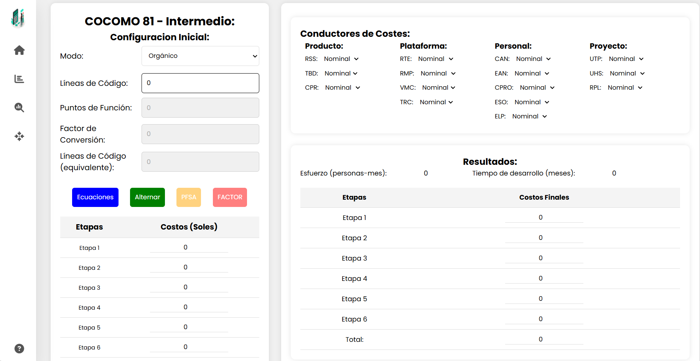
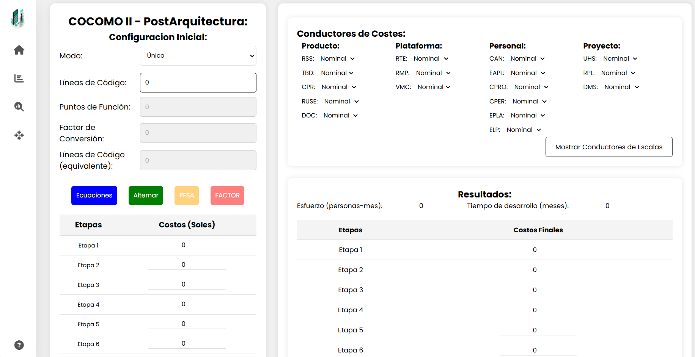
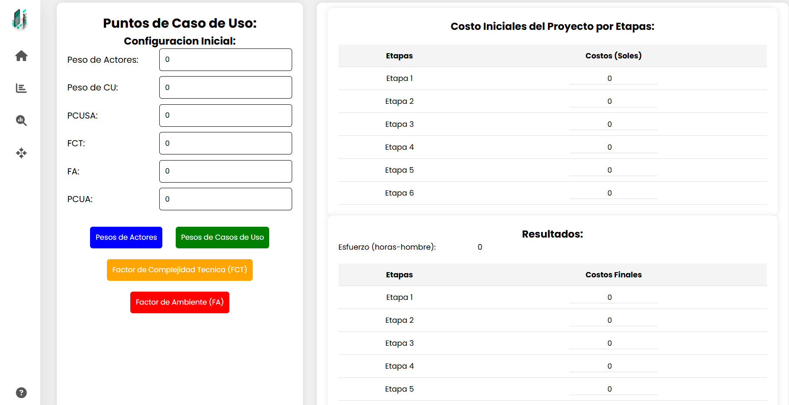

SoftChronoCalc
Inicio
COCOMO 81 Intermedio
COCOMO II P.A.
Puntos de Casos de Uso
Ayuda
SoftChronoCalc:
Bienvenidos!!!
¡Gracias por elegir SoftChronoCalcy como tu herramienta de confianza para la estimación de tiempo, esfuerzo y costo en el desarrollo de software! Nuestro programa ha sido diseñado con precisión y flexibilidad en mente, para ayudarte a planificar y gestionar tus proyectos con mayor eficiencia.
Modelos Implementados:
COCOMO 81 - Intermedio
COCOMO II - Post Arquitectura
Puntos de Casos de Uso
Puntos de Función
Vistas Generales del Software:
  
SoftChronoCalcy está aquí para facilitarte la tarea de planificación y asegurar que tus proyectos de software se mantengan en el camino correcto. ¡Explora las opciones disponibles y comienza a optimizar tus estimaciones hoy mismo!